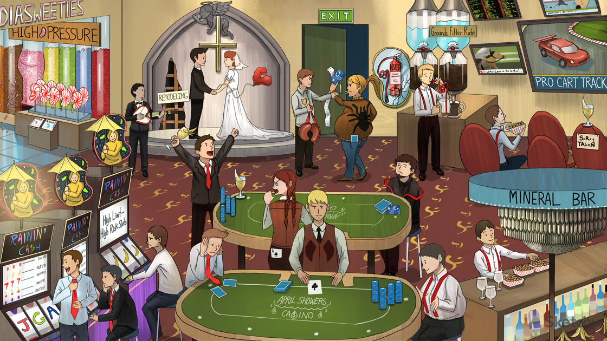

Rain umbrella: renin
The juxtaglomerular apparatus (JGA) is the site of synthesis, storage, and release of renin
Loose red tie: angiotensinogen
Tense red tie: renin converts angiotensinogen into angiotensin I
Lung vest: ACE is located in the vascular endothelium of the lungs
Two tense red suspenders with the winning ace: angiotensin II is converted from angiotensin I by ACE in the lungs
Tense red suspenders: angiotensin II causes vasoconstriction
Grounds filtration rate increased: angiotensin II increases GFR
Pinched efferent end of straw: angiotensin II constricts the efferent arteriole
Pro Cart Track: proximal convoluted tubule
Salty sodium peanuts at the Pro Cart Track: angiotensin II acts at the proximal convoluted tubule to increase sodium bicarb reabsorption
Suspenders at Mineral Bar: angiotensin II increases aldosterone (a mineralocorticoid) release from the adrenal cortex
Banana peels at the Mineral Bar: the mineralocorticoid aldosterone acts on the collecting duct to increase Na+ and fluid retention at the expense of K+
April: -pril suffix common to all ACE inhibitors
Pocketed ace: ACE inhibitor
Suspenders with the losing hand: ACE inhibitors prevent conversion of angiotensin I to angiotensin II
Floppy red suspenders: ACE inhibitors counteract the pressor effects of angiotensin II
Credit card: ACE inhibitors can cause an expected bump in creatinine
fainting: ACE inhibitors can cause significant hypotension and syncope in patients with high renin levels (e.g. heart failure)
Raised banana daiquiri: ACE inhibitors can cause hyperkalemia due to decreased aldosterone levels
Cheering single tense neck tie: ACE inhibitors increase levels of angiotensin 1 and renin
Failing heart balloon: ACE inhibitors are first line agents in the treatment of heart failure
Angel: ACE inhibitors reduce mortality in heart failure and MI
ACE inhibitors decrease angiotensin II mediated cardiac remodeling
Broken heart strings: ACE inhibitors are used in myocardial infarction (MI)
High pressure pipes: ACE inhibitors are first line agents in the treatment of hypertension
Kidney candy: ACE inhibitors slow the progression of diabetic nephropathy
Album: patients with albuminuria and blood pressure greater than 130/80 are started on an ACE inhibitor
Coughing dealer: ACE inhibitors can cause a dry cough
Braids: ACE inhibitors can increase bradykinins causing lung irritation (avoid by using ARBs)
“C” shaped ring on fat lip: ACE inhibitors are contraindicated in hereditary angioedema (due to C1 esterase deficiency)
Tarantula: ACE inhibitors are teratogenic
Fire extinguisher in cracked kidney glass: coadministration of ACE inhibitors with NSAIDs can precipitate acute kidney injury
Constricted kidney purse straps: ACE inhibitors are contraindicated in bilateral renal artery stenosis
Credit card: ACE inhibitors can precipitate acute renal failure in bilateral renal artery stenosis as indicated by a persistent increase in creatinine
SoRry TAkeN: -sartan suffix common to all angiotensin receptor blockers (ARBs)
Raised banana daiquiri: ARBs can increase K+ retention causing hyperkalemia due to decreased aldosterone levels
Losing at the high risk slots: aliskiren - a direct renin inhibitor
Bananas: aliskiren can cause hyperkalemia due to decreased aldosterone levels